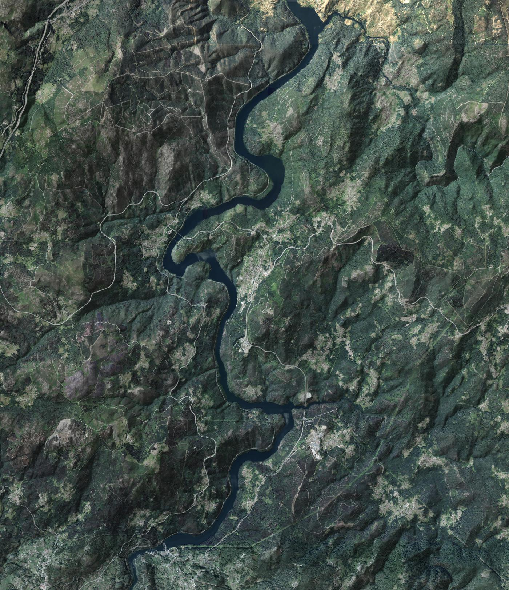

Os Muíños · Cortegada · junto al Miño
Dormir con la ventana abierta, oyendo el río.
Rebeca, en Booking · 9,7 de media en 66 comentarios
Una casa de granito para doce, metida en una curva del Miño. Seis dormitorios con su baño, un comedor con lareira y la calma del Ribeiro.
La casa
Una torre de granito con su galería verde
Desde la calle, la casa se reconoce por su esquina: una torre redonda de piedra con una galería acristalada de marcos verdes y el nombre escrito en el granito. Dentro, 250 metros cuadrados para un grupo. Toca un cristal y se abre.
O Pontillón
Abajo, la piedra
El comedor de la lareira
«Tiene un comedor con lareira espectacular en la planta baja», escribe Rebeca. Mesa de madera y bancos para todos.
- 250 m²la casa entera, solo para vosotros
- 6 + 6dormitorios, cada uno con su baño
- Lareiray asador en la planta baja
- Cocinacon lavavajillas, y lavadora
- Calefaccióny aire acondicionado
- Wificon un 10 en Booking
- Aparcamientoprivado y gratis
- Perrosgratis, y cuna gratis
Para familias y grupos
Doce sitios en la mesa. Seis puertas, seis baños.
Cinco dormitorios con cama doble y uno con dos camas, cada uno con su baño: en grupo, nadie hace cola. Decid cuántos sois y os repartimos.
- Por persona y noche
- —
- La casa, por noche
- —
Precios orientativos, como los de Booking para noviembre. Los niños de 4 años en adelante cuentan como adultos.
De noche
Lo que se oye desde la cama
El agua, la leña de la lareira, los grillos de agosto y el cárabo del invierno. Arranca con lo que sonaría a esta hora en Os Muíños; mueve cada barra a tu gusto.
—
Sonidos recreados en tu navegador, a la espera de grabarlos en la casa.
Alrededor
En la curva del Miño
El río, aquí embalsado en Frieira, dibuja una S enorme, y la casa está dentro de una de sus curvas, a unos 400 metros del agua. Vuela por él con la luz de ahora y luego muévete a tu aire.

Cargando el relieve…
Ahora en O Pontillón…
Relieve MDT05 y ortofoto PNOA © Instituto Geográfico Nacional (CC BY 4.0). Lugares: © colaboradores de OpenStreetMap.
- 400 m
El Miño
El embalse de Frieira, al norte de la casa. Agua quieta, orillas de bosque y la vía del tren por la ribera.
- 400 m
San Bieito do Rabiño
La iglesia barroca de la parroquia, con su cementerio y O Humilladoiro. La tradición dice que el santo cura las verrugas.
- 700 m
Petróglifos de Ferradura
Grabados en la roca, a un paseo de casa. Al lado, la Casa Grande da Granxa, un pazo con su capilla.
- a pie
El Camino da Geira e dos Arrieiros
El camino entre el Ribeiro y el Miño que Carmen llama Ribeiro-Miñoto pasa por la aldea.
- 10 min
Termas de Prexigueiro
Pozas de agua termal al aire libre. «A unos diez minutos en coche», dicen los que han venido.
- 13 km
Ribadavia
La capital del Ribeiro: su judería, el castillo de los Sarmiento y las bodegas.
- 43 km
Ourense
As Burgas, la catedral y las termas del Miño.
- 2 km
Cortegada
Restaurantes, farmacia, panadería, bares y centro de salud, a menos de dos kilómetros. Y su balneario.
Distancias en línea recta (las de a pie) y las que da Carmen (las de coche). Por confirmar sobre el terreno.
Quien ha venido
Un 9,7 y gente que repite
9,7
Booking · 66 comentarios
- Limpieza
- 9,8
- Confort
- 9,8
- Instalaciones
- 9,8
- Personal
- 9,8
- Calidad-precio
- 9,8
- Ubicación
- 9,4
- Wifi
- 10
Google 4,9 sobre 5
«Que cada habitación tenía su propio lavabo, el nivel de limpieza, la amplitud de la casa en general. El ambiente rural al lado del Miño.»
«Fuimos un grupo de amigos, nueve adultos, dos niños y un perro. Estuvimos muy cómodos y muy a gusto.»
«Nos gustó todo como siempre. No es la primera vez que vamos y seguro que repetiremos.»
Os recibe
Carmen
Un 9,8 como anfitriona. «Carmen, una magnífica persona», escribe Marco. Habla castellano e inglés.
Reservar
Elige los días y cuántos venís
La casa se alquila entera. Mira los días libres y lo que sale por persona.
- Llegada
- elige un día
- Salida
- —
- Noches
- —
- Por persona y noche
- —
- Total
- —
Motor de demostración: no envía ni guarda nada y la ocupación es inventada. Precios orientativos.
- Entrada
- De 16:00 a 20:00. Avisa a Carmen de la hora.
- Salida
- De 9:00 a 12:00.
- Niños
- Bienvenidos. Desde los 4 años cuentan como adultos; cuna gratis a petición.
- Perros
- Gratis.
- Tabaco
- No se fuma dentro.
Cómo llegar
Os Muíños, San Bieito do Rabiño
Os Muíños, 40 · 32200 Cortegada (Ourense)
Por la OU-801 desde Cortegada. Ribadavia, a 13 km; Ourense, a 43 km; el aeropuerto de Vigo, a 61 km. Estación de tren en Filgueira, a 3,8 km.
Carmen · 662 21 49 56